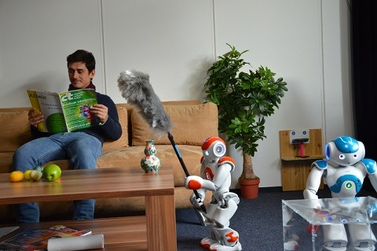

A slew of advances in the field of reinforcement learning (RL) have resulted in significant improvements in learning efficiency for autonomous agents and robots.
However, a vast majority of these works fail to consider human and other contextual factors, which are important to consider from a practical standpoint, in terms of increased trustworthiness in human-robot scenarios.
Recently, there has been an increasing degree of focus on auxiliary performance measures such as avoiding unsafe actions during learning, providing human-interpretable solutions and learning context-aware policies in general.
Such performance measures improve the practical utility of RL and make it an increasingly attractive option for real-world autonomous robots that are capable of a harmonious coexistence with human users.
The focus of this workshop is to bring together researchers from the fields of robotics and RL to discuss and share state-of-the-art methods, challenges and novel solutions pertaining to the issue of incorporating human-related aspects into RL agents and robots. We hope to provide an opportunity to discuss fundamental current issues to be addressed in order to foster the presence of autonomous agents and robots in real-world scenarios as well as future research directions. The main topics of interest in the call for submissions are explainability, interactivity, safety, and ethics in social robotics and autonomous agents especially from a reinforcement learning perspective. In this regard, approaches with special interest for this workshop are (but not limited to):
Important dates: Paper submission deadline: July x, 2021 Notification of acceptance: July x, 2021 Camera-ready version: August x, 2021 Workshop: August 27, 2021
Selected contributions will be presented during the workshop as spotlight talks and in a poster session.
Contributors to the workshop will be invited to submit extended versions of the manuscripts to a special issue whose Call for Papers can be found here. Submissions will be peer reviewed consistent with the journal practices.



The focus of this workshop is to bring together researchers from the fields of robotics and RL to discuss and share state-of-the-art methods, challenges and novel solutions pertaining to the issue of incorporating human-related aspects into RL agents and robots. We hope to provide an opportunity to discuss fundamental current issues to be addressed in order to foster the presence of autonomous agents and robots in real-world scenarios as well as future research directions. The main topics of interest in the call for submissions are explainability, interactivity, safety, and ethics in social robotics and autonomous agents especially from a reinforcement learning perspective. In this regard, approaches with special interest for this workshop are (but not limited to):
- Explainability, interpretability, and transparency methods for feature-oriented and goal-driven RL
- Explainable robotic systems with RL approaches
- Assisted and interactive RL in human-robot and human-agent scenarios
- Human-in-the-loop RL and applications
- RL from demonstrations and imperfect demonstrations
- Robot and agent learning from multiple human sources
- Multi-robot systems with human collaboration
- Safe exploration during learning
- Ethical reasoning and moral uncertainty
- Fairness in RL and multi-agent systems
- Theory of mind based RL frameworks
- Use of human priors in RL
Important dates: Paper submission deadline: July x, 2021 Notification of acceptance: July x, 2021 Camera-ready version: August x, 2021 Workshop: August 27, 2021
Selected contributions will be presented during the workshop as spotlight talks and in a poster session.
Contributors to the workshop will be invited to submit extended versions of the manuscripts to a special issue whose Call for Papers can be found here. Submissions will be peer reviewed consistent with the journal practices.